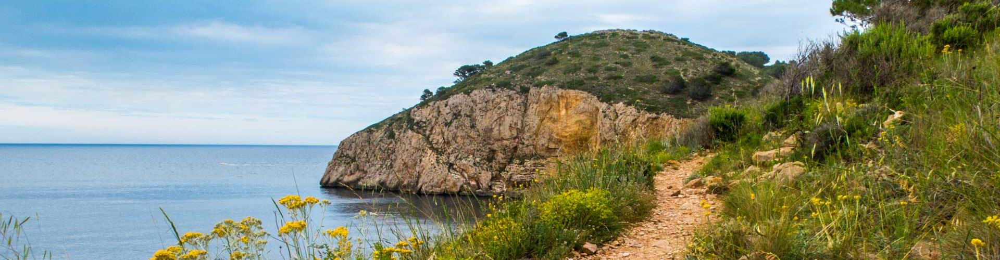

Ruta · Montgrí
Ruta lineal que uneix el passeig marítim de l’Estartit amb Cala Montgó. La ruta transcorre per dos ambients ben diferenciats, per una banda caminarem entre garrigars i joves boscos de pi blanc , i…